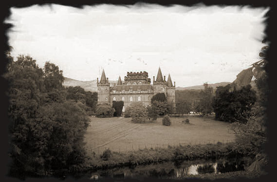

On the trail of Clan Campbell Scotch Whisky…
The history of the Clan Campbell has always been intrinsically linked to the history of Scotch whisky.
In fact, the Campbells of Argyll and, in particular, Sir Colin Campbell, first known leader of this great family, have, since the 13th century, incessantly contributed to the defence of Scotland, and to the successful reputation of a country renowned for its famous “water of life”. It was in the 17th century that Clan Campbell whisky made its definitive mark on history with Marie Stuart who, when visiting her sister (the Countess of Argyll) in Inveraray, discovered the famous Clan Campbell Scotch whisky. Today the Duke of Argyll, head of the Clan Campbell, remains the guardian of all traditions, constantly monitoring the quality of the brand that bears his name.
Inveraray Castle is still the family home of the Clan Campbell, Dukes of Argyll since 1701.
Built in 1745 on the ruins of a 15th century castle, the towers were added in 1877.

The central tower, which displays the Campbell coat of arms, has Scotland’s highest ceiling.